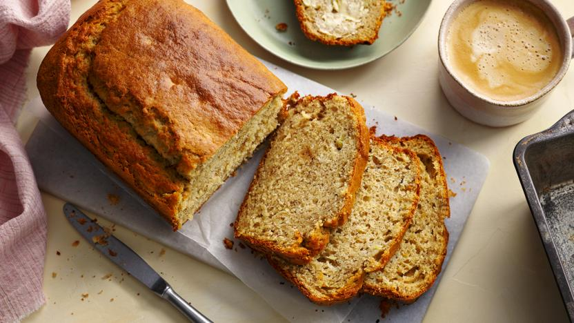

Banana Bread
Home

Description
This is an easy banana bread recipe that gives perfect results every time. It uses up loads of bananas - the blacker the better. This cake is made with butter, but if you're looking for a quicker oil-based easy banana bread, we've got you covered.
Each serving provides 334 kcal, 5g protein, 53g carbohydrates (of which 30g sugars), 11g fat (of which 6.5g saturates), 2g fibre and 0.8g salt.
Ingredients
- 285g/10oz plain flour
- 1 tsp bicarbonate of soda
- ½ tsp salt
- 110g/4oz butter, plus extra for greasing
- 225g/8oz caster sugar
- 2 free-range eggs
- 4 ripe bananas, mashed
- 85ml/3fl oz buttermilk (or normal milk mixed with 1½ tsp lemon juice or vinegar)
- 1 tsp vanilla extract
Method
- Preheat the oven to 180C/350F/Gas 4.
- Sift the flour, bicarbonate of soda and salt into a large mixing bowl.
- In a separate bowl, cream the butter and sugar together until light and fluffy.
- Add the eggs, mashed bananas, buttermilk and vanilla extract to the butter and sugar mixture and mix well. Fold in the flour mixture.
- Grease a 20cm x 12.5cm/8in x 5in loaf tin (2lb) and pour the banana bread mixture into the tin.
- Transfer to the oven and bake for about an hour, or until well-risen and golden-brown.
- Remove from the oven and cool in the tin for a few minutes, then turn out onto a wire rack to cool completely before serving.